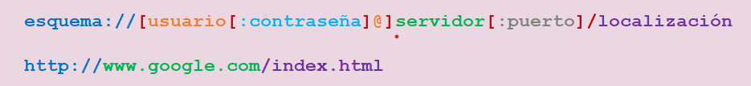

Los elementos semánticos
La semántica del texto en línea HTML se utiliza para definir el significado, estructura, o el estilo de una palabra, una línea
o cualquier pieza arbitraria de texto. En este apartado se verán también los hiperenlaces y cómo se indican en HTML.
Algunos de los elementos
más utilizados se describen a continuación.
Elementos de resaltado
Habitualmente los textos están formados por elementos como palabras en negrita, subrayadas o en cursiva, o se quiere marcar un parte del texto que es más importante que el resto. HTML proporciona varias etiquetas para marcar cada uno de los diferentes tipos de texto.
Bastardilla (italic)
Muestra el texto marcado con un estilo en cursiva o itálica. Se indica con la etiqueta <i>.
<p>Este texto tiene una palabra en <i>cursiva</i>.</p>
Este texto tiene una palabra en cursiva.
Negrita (bold)
Indica que el texto debe ser representado con una variable bold, o negrita, de la tipografía que se esté usando. La etiqueta que se utiliza es <b>
<p>Este texto tiene una palabra en <b>negrita</b>.</p>
Este texto tiene una palabra en negrita.
Subrayada (underlined)
Muestra el texto subrayado al indicarlo con la etiqueta <u>.
<p>Este texto tiene una palabra <u>subrayada</u>.</p>
Este texto tiene una palabra subrayada.
Énfasis (emphasis)
El elemento <em> se utiliza para marcar con énfasis o recalcar las partes importantes de un texto. En HTML <em> es visualmente similar a la cursiva, pero solo se debe utilizar si es una parte importante. Si no, se utiliza la cursiva.
<p>Este texto tiene una <em>parte importante</em>.</p>
Este texto tiene una palabra parte importante.
Strong
De forma similar a <em>, el elemento strong se utiliza para marcar con especial énfasis las partes más importantes o urgentes de un texto. Se indica con la etiqueta <strong>.
<p><em>El dinero</em> es importante pero <strong>la salud </strong> lo es más.</p>
El dinero es importante pero la salud lo es más.
Small
Este elemento hace el tamaño del texto un nivel más pequeño que el tamaño mínimo de fuente del navegador. En HTML5, este elemento es utilizado en para representar comentarios laterales y letra pequeña. Se indica con la etiqueta <small>.
<p>Texto en tamaño normal // <small>texto en letra pequeña</small>.</p>
Texto normal // texto en letra pequeña.
S
Muestra el texto tachado con una línea horizontal. Representa contenido irrelevante u obsoleto. La etiqueta que se utiliza es <s>.
<p>Texto normal y... <s>texto tachado</s>.</p>
Texto normal y... texto tachado.
Saltos de línea
Break
El elemento HTML line break produce un salto de línea en el texto. Es útil para escribir un poema o una dirección, donde la división de las líneas es significante.
Para introducir un salto de línea a nuestro texto, pondremos la etiqueta <br>.
*Este elemento no lleva etiqueta de cierre.
<p>Este párrafo contiene un <br> salto de línea.</p>
Este párrafo contiene un
salto de línea.
Word break
El elemento word break (<wbr>) representa una posición dentro del texto donde el explorador puede opcionalmente saltar una línea, aunque sus reglas de salto de línea de otra manera no crearían un salto en esa posición.
Links
Un identificador de recursos uniforme o URI (Uniform Resource Identifier) es una cadena de caracteres que identifica los recursos de una red de forma unívoca. Pueden ser un localizador de recursos uniforme(URL), un nombre de recurso uniforme (URN) o ambos.
Partes de un URL (Uniform Resource Locator)
- Esquema → http, ftp, mailto, etc.
- Usuario → nombre del usuario en el servidor si es necesaria la autorización.
- Contraseña → se pone junto al usuario si es necesaria la autenticación.
- Servidor → nombre de la máquina.
- Puerto → de servicio. Hay que indicarlo cuando no está en el puerto estándar.
- Localización → ruta al recurso en el servidor. Si no lo indicamos, de forma predeterminada lo interpreta como 'index.html'.
Hiperenlace
Anchor
El elemento anchor crea un enlace a otras páginas de internet, archivos o ubicaciones dentro de la misma página, direcciones de correo, o cualquier otra URL.
Se especifica con la etiqueta <a> seguida del atributo href, en el que se indicará la localización o URL.
<p>Este texto contiene un enlace a la página principal de <a href="http://www.google.com">Google</a>.</p>
Este texto contiene un enlace a la página principal de Google.
Internos
Son los que se dan entre páginas web del mismo dominio, hay dos tipos:
Absolutos
Dentro del atributo href la URL puede escribirse de forma absoluta, es decir, incluyendo el dominio.
http://sitio/pagina.html
Relativos
La URL se escribe de forma relativa si no incluimos el dominio, dejando solo la localización.
- Página del mismo directorio → pagina.html
- Página de un subdirectorio → subdirectorio/pagina.html
- Página del directorio anterior → ../pagina.html
De posición
Internos
Se trata de un enlace a un lugar concreto dentro del mismo documento o página web.
De forma genérica, si quremos ir al principio del documento se referencia con el identificador #top.
Identificafor de elemento
<elemento id="elementoX">Elemento X</elemento>
Referencia al elemento
<a href="#elementoX">Enlace a elemento X</a>
Generales
Referencia desde otro documento o página. Se debe indicar cuál es la URL del documento y concatenar a la misma el identificador del lugar concreto al que queramos enlazar.
Enlace a un <a href="URL#identificador">lugar concreto</a> de otro documento.
Atributos (si usamos href)
- Download:
- Se utiliza, por ejemplo, cuando queremos descargar el documento enlazado en vez de visualizarlo.
- Podemos poner de forma opcional el nombre que tendrá cuando se descargue:
- <a href="/mifoto.jpg" download="Foto_Cristina">
Target:- Se utiliza para especificar dónde abrir el documento enlazado. Por ejemplo, para que se abra en una pestaña o ventana nueva se indica con '_blank':
- <a href="/mifoto.jpg" download="Foto_Cristina" target="_blank">